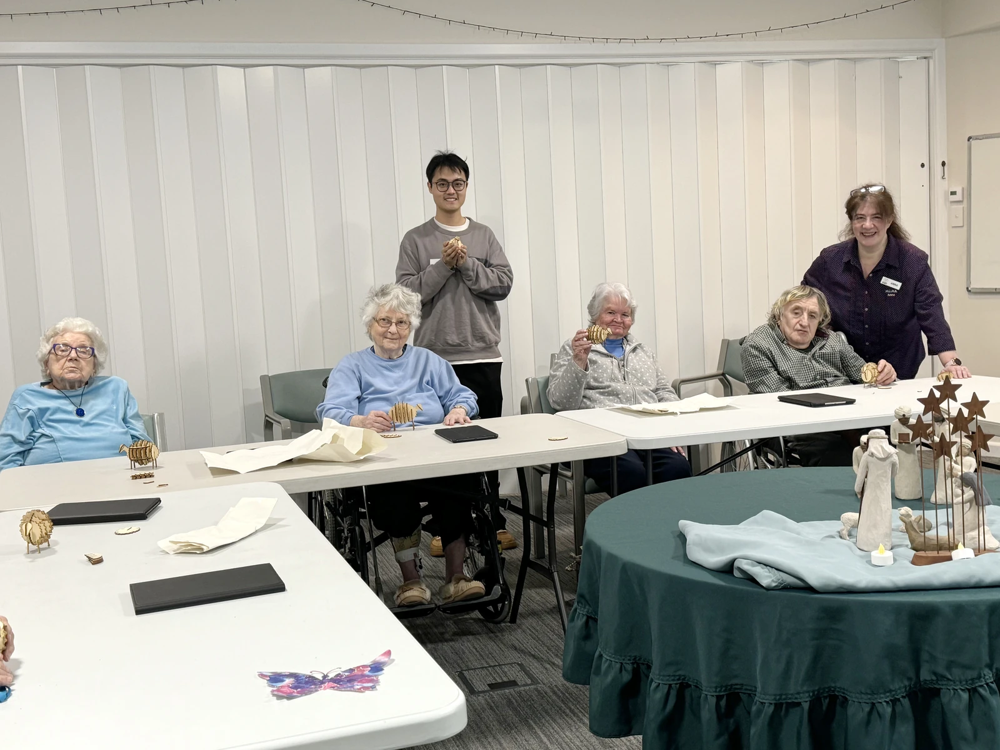
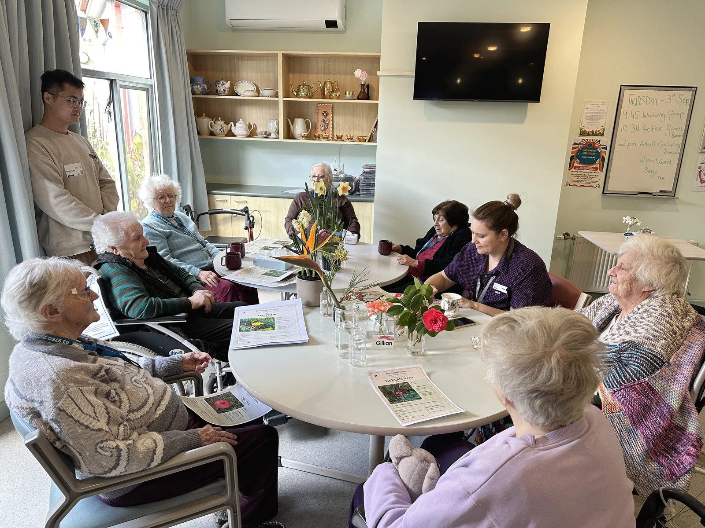

Ageing & older adults
My doctoral research explores shared making, gardening, and outdoor discovery with older adults and care staff.

Design researcher & illustrator
PhD candidate · Swinburne University of Technology · Melbourne
My PhD explores how design can support outdoor engagement in residential aged care. I work with older adults and care staff through crafting, gardening, and nature discovery.
My doctoral research is supervised by Prof. Sonja Pedell, Dr. Diego Muñoz, and Prof. Leon Sterling, and supported by a full scholarship funded by the Australian Research Council (ARC).
My wider research connects human–AI interaction, education, and technology adoption. Through collaborations across design, HCI, and education, I explore creative practice and learning across generations.
I explore how design and technology can support participation, creativity, and learning, through my doctoral research and wider collaborations.
My doctoral research explores shared making, gardening, and outdoor discovery with older adults and care staff.
Exploring co-creation, social robots, and technology adoption: how people make sense of AI and find a place for it in their lives.
Investigating AI-supported design education, creative identity, and learning across generations.
My doctoral research involves spending time with older adults and care staff in residential aged care. Through observation, conversations, field notes, and participation in shared activities, I explore how people, places, materials, and routines shape outdoor engagement.
I explore how residents and care staff can shape activities and materials through making, trying, and adapting them together. Research through Design connects this work with iterative prototyping and reflection: what we make, how it is used, and what this helps us understand.
I am interested in how people understand the same technology differently. My collaborative work uses Q methodology to explore art students’ perspectives on generative AI and creative identity, bringing patterns of viewpoints into focus.
I explore interviews and narrative inquiry alongside experiments and mixed-methods designs. My collaborative work also uses structural equation modelling (SEM), including PLS-SEM, and approaches such as fsQCA to examine relationships and patterns in learning, behaviour, and technology experiences.
I am interested in scoping reviews, systematic literature reviews, and qualitative evidence synthesis, including meta-ethnography. Alongside these approaches, my published work uses bibliometric reviews to explore research trends, connections, and gaps in fields such as game design for older adults and generative AI in design.
My doctoral research follows creative activities, outdoor places, and everyday participation in residential aged care.
Explore the research journey
Shared crafting, brought together in an outdoor Nativity display.

Exploring plants, care, and the rhythms of everyday participation.

Shared walks, plants, and memories, brought together in the latest Our Outdoor Stories book.
Read the storybookFrom interaction design in industry to participatory research with older adults.
Swinburne University of Technology
Melbourne, Australia · Full scholarship
Hunan University
Changsha, China
Northeast Agricultural University
Harbin, China
SAIC Volkswagen
Interaction and user experience design for automotive interfaces.
ByteDance
Interaction design for business products and advertising workflows.
DiDi Global
User research, interaction design, and competitive analysis for mobility services.
mecwacare · Aged Care Volunteer Visitors Scheme
Melbourne, Australia
I visit an older person in residential aged care for companionship and conversation, building a connection through regular visits.
Brisbane, Australia
I create quizzes and illustrated presentation materials for Happy Hour, an online social programme for older adults, and refine them with the programme team.
I share what I read, learn, and draw on Xiaohongshu.
蜻蜓隊長的学习池 · Academy_Design
Reading notes and practical explanations of qualitative research, from coding and thematic analysis to focus groups and research questions. I also share reflections on academic writing and publishing.
Read my research notes蜻蜓隊長的作画池 · wuxingting
Digital illustrations, landscape sketches, and scenes from everyday life, alongside my Procreate practice and drawing lessons.
Explore my artworkPublications from my doctoral research and wider collaborations.
View all publicationsUpdated 17 November 2026.
Entertainment Computing 59, 101250
Journal of Applied Gerontology · Online first
International Journal of Human–Computer Interaction, 1-28
Education and Information Technologies
International Journal of Human–Computer Interaction 42 (9), 6655-6687
Conference and journal service across HCI, education, ageing and related fields.
View my ORCID recordBased on public ORCID records · Updated 17 November 2026
Journal indicators · 2025 data
IF = Journal Impact Factor (2025, released in 2026). Best JCR quartiles are marked. Indicators link to their sources; indexing checked 17 November 2026.